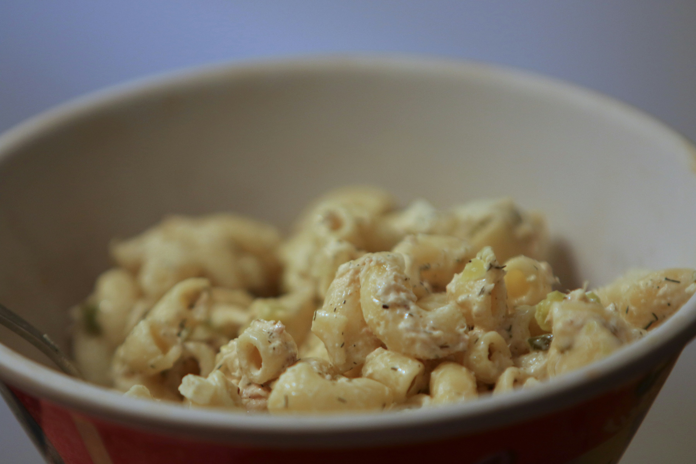

Hawaiian Macaroni Salad Recipe

Description
Aloha! This Hawaiian-style macaroni salad will absolutely make your mouth water,
and will leave you wanting more. It is a quick and recipe perfect for an evening
with friends or family. The creamy dressing, combined with the crunch of carrots and
the slight tang of apple cider vinegar, creates a delightful balance of flavors.
It serves 10 and total time is about 3 hours and 15 minutes.
Ingredients
- 1/3 cup finely diced red onion (optional)
- 2 2/3 cups mayonnaise, plus more as needed
- 2 tablespoons apple cider vinegar
- 1 1/2 teaspoons white sugar
- 1 teaspoon kosher salt, plus more to taste
- 1 teaspoon freshly ground black pepper
- 2 small carrots, peeled and grated
- 1 pound elbow macaroni
Directions
- If using red onion, place onion in a bowl with enough cold water to cover. Set aside to soak for 20 minutes; drain.
- Meanwhile, stir mayonnaise, cider vinegar, sugar, salt, and black pepper together in a large bowl. Stir in red onion immediately after draining. Stir in grated carrot; set aside.
- Bring a large pot of generously salted water to a rolling boil, and boil elbow macaroni until tender with a bite, about 5 minutes, or according to package directions. Pour into a strainer set in the sink. Run cold water over pasta until pasta is cooled to room temperature, about 30 seconds. Drain in the strainer for about 20 seconds.
- Pour macaroni into the bowl with dressing and mix well. Scrape down the sides of the bowl, cover salad with a sheet of plastic directly touching the surface, and refrigerate for at least 3 hours and preferably overnight.
- Remove salad from refrigerator and stir thoroughly. Adjust texture by stirring in a spoonful of mayonnaise and about 1/4 cup water. Stir again, and add more mayonnaise and/or water as needed. Taste for salt and adjust if needed.
Home